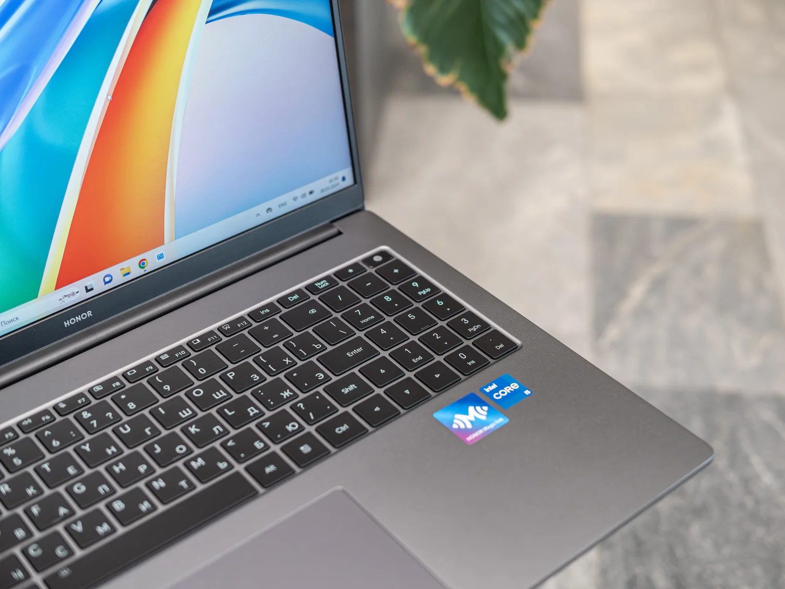

Самое важное о новом ноутбуке Honor MagicBook X 2024
Дизайн: легкий и прочный корпус
Honor с самых первых моделей MagicBook уделяет особое внимание эстетике и надежности ноутбуков. Сверху алюминиевый сплав авиационного качества, внутри пластик, который непросто отличить от металла на крышке. Сборка как всегда на высоте, а вес 14-дюймовой и 16-дюймовой модели будет беречь спину, даже если вы перемещаетесь по городу с рюкзаком целый день.
Honor MagicBook X 14 Pro 20214 по всем фронтам компактнее. Если на счету каждый грамм и дюйм свободного пространства, брать нужно именно эту модель. Все равно у него те же характеристики, что и у старшей версии. Включая и емкость батареи, что неожиданно и, конечно, приятно.
Однако Honor MagicBook X 16 и X 16 Pro не отстают. Для своих размеров ультрабуки получились воздушными и тонкими. Особенно на фоне своих одноклассников по 2 килограмма. Разница в 300−400 граммов чувствуется во всем, включая переноску ноутбука в рюкзаке, в руках по офису. При этом получаем широкоформатный экран 16:10. На нем удобно разместить браузер с YouTube и рядом — документы, чтобы и креативить, и контент потреблять.
Ноутбук не стыдно перевернуть вверх тормашками и показывать окружающим. Злая перфорация системы охлаждения, надежные резиновые ножки — в ноутбуке MagicBook X 16 Pro балом правит минимализм. По бокам находятся отверстия двух динамиков. Звук из них громкий, но басов не хватает. Это уже становится то ли традицией, то ли проклятием всех Windows-ноутбуков.Клавиатура и тачпад
Сканер отпечатков встроен прямо в кнопку включения, но только в MagicBook X 14 Pro и X 16 Pro. Можно быстро, удобно и надежно снимать блокировку системы.
Клавиатура и кнопки большие, удачно разнесены друг от друга, поэтому печатать на любом ноутбуке Honor комфортно. Коммуналку, досрочные платежи по кредиту и прочие «взрослые радости» особенно удобно считать на цифровом блоке клавиш numpad. А вот кнопку Shift справа и Backspace почему-то решили укоротить. Первое время могут быть промахи, но через день-два уменьшенный размер клавиш кажется привычным.
Тачпад под клавиатурой чуткий к прикосновениям, поддерживает мультитач и жесты. Им комфортно орудовать 90% времени. А вот в играх, фоторедакторах, в программах для монтажа лучше подключить беспроводную мышь — с ней быстрее.
Дисплей в лучших традициях Honor
Экран в Honor MagicBook X 16 Pro 2024 комфортный, как на него ни взгляни. Разрешение классическое — 1920 на 1200 точек. Пропорции 16:10 идеально подходят для мультиоконного режима, а передача цветов соответствует палитре sRGB на 100%. Если планируете работать с контентом, где требуется точность цветопередачи, дисплей вас порадует.
Частота работы экрана классическая для любого гражданского (не игрового) ноутбука — 60 Гц. При этом поддерживается технология подавления мерцания, чтобы глаза чувствительных к ШИМ граждан не уставали. А для крепкого сна пригодится фильтрация синего цвета, которая работает по расписанию или принудительно. Немцы из лаборатории TUV Rheinland одобряют — сертификация пройдена.
Универсальная начинка
С почти любой задачей ноутбуки Honor MagicBook X справляются благодаря процессору Intel Core i5. В 2024 году — уже Intel 13-го поколения. Комбо из восьми ядер и частоты 4,6 ГГц на пике — офисные, учебные и развлекательные задачи такой процессор закрывает. Результаты в синтетических тестах:
- CineBench R23 (Single) — 1 601;
- CineBench R23 (Multi) — 10 158;
- Geekbench 6 (Single) — 2 385;
- Geekbench 6 (Multi) — 10 440.
Если в одноядерном тесте ноутбук показывает вполне обычные результаты, то в мультиядерном прогоне компьютер показывает себя очень хорошо. Запаса прочности такого «камня» хватит на несколько лет вперед. Так и должно быть: ноутбук мы покупаем не на один год, особенно в условиях ограниченного бюджета.
За графику отвечает подсистема Intel Iris Xe Graphics G4. Она неплохо прикрывает процессор в работе с несложной графикой, но на плавный гейминг в AAA-проектах рассчитывать не стоит. А вот смотреть фильмы в 4K, монтировать ролики в Full HD, играть в простые игры. Главное — не забыть переключиться в производительный режим. Это можно сделать комбинацией клавиш «Fn+P».
Память на будущее
Главное преимущество линейки MagicBook X Pro — возможность установить второй накопитель емкостью до 1 ТБ без потери гарантии. Тем временем благодаря интерфейсу M.2 PCIe скорость работы встроенной памяти на 512 ГБ высокая, это золотой стандарт последних лет:
- чтение — 3094 МБ/с;
- запись — 2778 МБ/с.
Оперативной памяти 8 либо 16 ГБ. Она скоростная, поколение LPDDR4x трудится на частоте 4266 МГц, но смотреть лучше в сторону 16 «гигов».
Может показаться, что базовой версии хватит для большинства задач. Однако пройдет год-другой, и 8 ГБ оперативки могут стать бутылочным горлышком в производительности ноутбука. Даже несмотря на остальное «железо», которое еще будет актуальным долгое время. Банально больше вкладок в Chrome будет держаться в фоне, быстрее пойдет обработка фото.
Лучшие друзья ноутбука Honor — смартфоны и планшеты Honor
Или планшет. Впрочем, без разницы — экосистема устройств Honor давным-давно выстроена и работает бесшовно. Между смартфоном и компьютером можно перегонять туда-сюда тонну картинок, видео и документов. Для ускоренного первого знакомства девайсов у ноутбуков Honor MagicBook есть NFC-метка рядом с клавиатурой.
Больше подключать девайсы Honor вручную нет необходимости. Они всегда будут на связи друг с другом и готовы обмениваться контентом без интернета.
Но самое полезное в такой связке — возможность транслировать экран смартфона прямо на ноутбук, причем открывать на нем до трех приложений одновременно. А еще на лэптопе можно принимать вызовы, получать уведомления, не прикасаясь к смартфону.
Функции «Мультиэкран», Honor Share и прочая магия работает в рамках одной единой учетной записи Honor.
Рабочий день без розетки
MagicBook X 16 Pro заботится, чтобы пользователь не перетруждался. В офисных задачах Honor MagicBook X 16 Pro 2024 проживет около 7−8 часов рабочего дня, а при воспроизведении 1080p-видео — 12 часов. То есть офисный день.
Далее потребуется подзарядка, кстати, весьма быстрая. За первые полчаса ноутбук заряжается на 45%, а полный цикл проходит за полтора часа. Спасибо штатному блоку питания на 65 Вт, от которого еще и смартфон можно зарядить. Благо интерфейс у него современный и универсальный — USB-C.
Цены Honor MagicBook X 14 Pro, X 16 и X 16 Pro в России
Цена Honor MagicBook X 16 2024 в комплектации 16/512 ГБ — 72 999 рублей, а по акции еще приятнее — 64 999 рублей. Экономия — за счет отсутствия Windows на борту. Установить несложно, вот как это сделать.
Pro-модели получили более продвинутые характеристики и, соответственно, цены повыше:
- Honor MagicBook X 14 Pro 2024 (8/512 ГБ) — 81 990 рублей;
- Honor MagicBook X 14 Pro 2024 (16/512 ГБ) — 89 990 рублей;
- Honor MagicBook X 16 Pro 2024 (8/ 512 ГБ) — 84 990 рублей;
- Honor MagicBook X 16 Pro 2024 (16/ 512 ГБ) — 92 990 рублей.